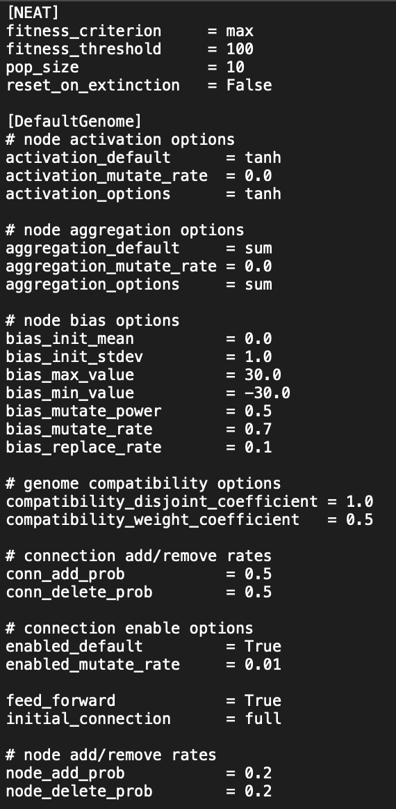

AI-Powered Flappy Bird with NEAT Algorithm
This project represents an innovative intersection of game development
and artificial intelligence, culminating in a Python-based version of
the iconic game Flappy Bird, enhanced with the NeuroEvolution of
Augmenting Topologies (NEAT) algorithm. By employing this evolutionary
algorithm, I have developed an AI player that exhibits remarkable
performance, capable of navigating the game indefinitely without losing.
Core Features and Innovations:
At the core of this project lies the NEAT algorithm, a cutting-edge
approach to constructing artificial neural networks through evolutionary
processes. This method allows the AI to learn and adapt its strategy
over time, optimizing its gameplay to navigate through obstacles with
unparalleled efficiency.
Unlike traditional AI approaches that rely on predefined patterns or solutions, the NEAT-powered AI in this Flappy Bird project continuously evolves. It learns from each gameplay session, improving its decision-making process to avoid obstacles more effectively with every attempt.
The NEAT algorithm dynamically adjusts the architecture of the neural network, enabling the AI to develop complex strategies and responses to in-game challenges. This feature ensures that the AI's gameplay remains robust across various scenarios, showcasing its ability to handle the unpredictable nature of Flappy Bird's dynamic environment.
To make the AI's learning process tangible, the project includes visualization tools that illustrate the neural network's decision pathways and adaptations. This not only provides insight into how the AI strategizes its moves but also serves as an educational tool for understanding the mechanics of evolutionary algorithms and neural network topologies.
Developed in Python, this project leverages the language's versatility and the rich ecosystem of libraries available for AI and game development. This choice ensures that the game is not only efficient and reliable but also accessible for further development and educational purposes.
Educational and Experimental Impact:
This Flappy Bird AI project goes beyond entertainment, offering a
hands-on experience with advanced AI concepts in a familiar and engaging
context. It serves as a practical demonstration of how evolutionary
algorithms can be applied to solve complex problems, providing a
valuable learning resource for enthusiasts and professionals alike
interested in AI, neural networks, and game development.
Through this endeavor, I have showcased my proficiency in integrating sophisticated AI technologies into software projects, my ability to code complex systems in Python, and my passion for exploring the frontiers of artificial intelligence and its applications in interactive entertainment.
PICTURES OF FLAPPY BIRD:

PICTURE OF SOME CONFIG FILE USED
